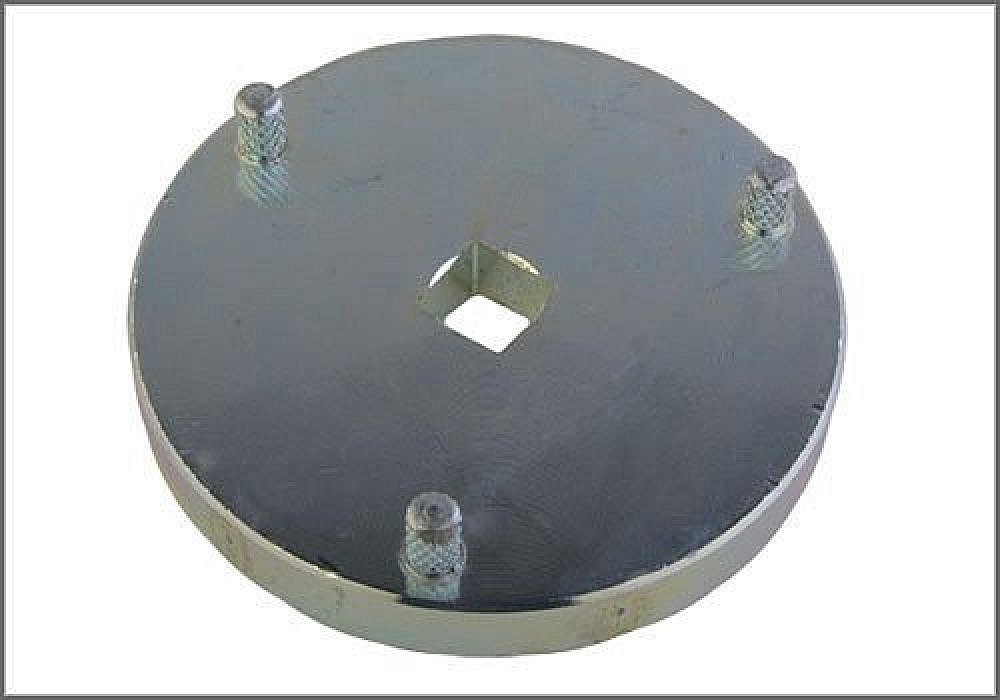

Aftermarket Tools
Ring Nut Spanner
AST tool# 3155

Ring Nut Spanner. Applicable: VW Automatic Transmission (01M,096) Differential Bearing Adjusting Rings.
- Steel Construction
- Made in Germany
- Call AST for Pricing
Contact AST for pricing.
Assenmacher Specialty Tools
1-800-525-2943